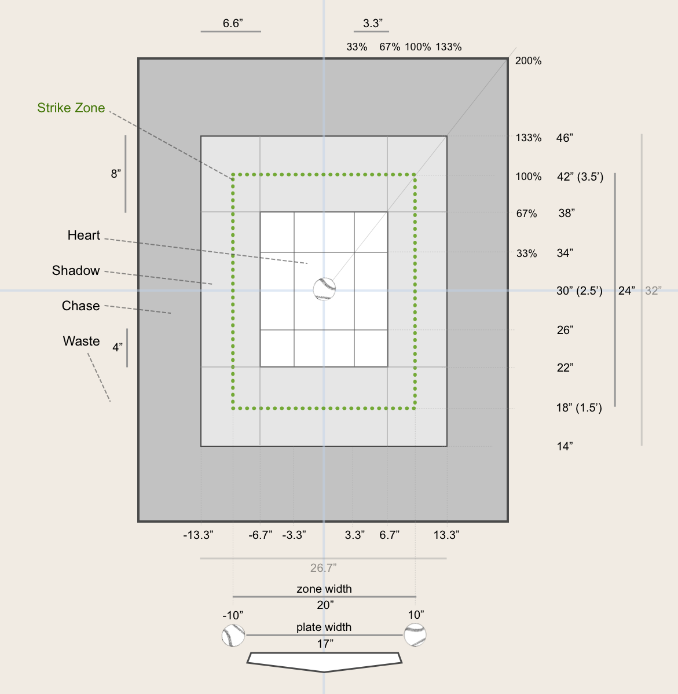

Visual Baseball ABS · KBO
선수 프로필
Run Value—위치·카운트 중립
—
—
—
—
전체 구획 기준도 보기

Zone Decisions
연도별 비교
두 선수·시즌의 Swing/Take Run Value를 나란히 비교합니다.
Run Value = Σ[Raw Run Value − 리그 평균 Run Value(볼카운트, 상대 위치)] · 양수일수록 타자에게 유리합니다.